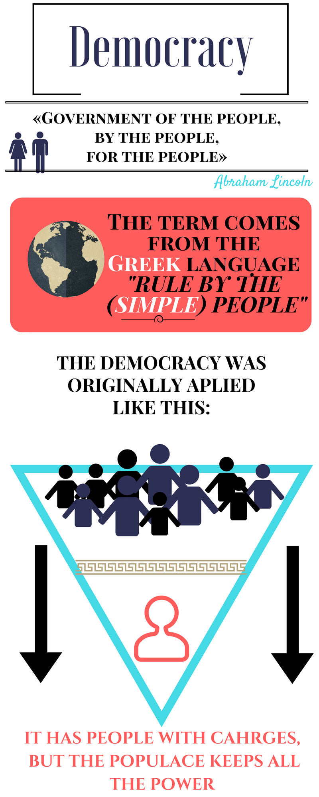
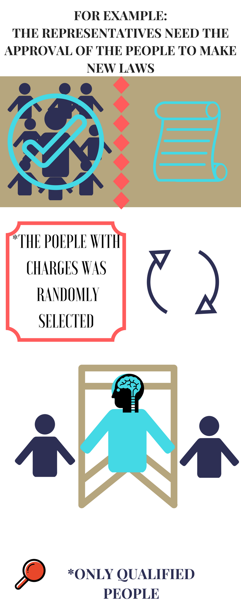

Democracy
 
Yemen is the space where the struggle for the consequences of a change in regime is performed, and this caused a war that resulted from the resignation of the former president Ali Abdullah Saleh. Citizenship did not approved its mandate in 2011. There is an ethnical group, the Houthi, which is now involved. However, for many time it maintained itself in the margin of consensus in Yemen, where the conflict arose.
The purpose of this group, the Houthi, was to take the control of the capital, Sanaa, what they achieved on September 2014. This group has a population that will overcome the Shiite trend that will dominate the North of Yemen.
When advancing to the south, it gathered its armies with unconditional people of former president Saleh. On March 25, 2015, it captured an important military base in the border of Adén and among the prisoners; they captured the Ministry of Defense.
Of the countries involved, due to its interests in the zone of Saudi Arabia who planned a significant military maneuver called decisive storm operation, which withdrew the Houthi forces. This allowed President Abed Rabbo Mansour Hadi to re-assume the power of presidency, facts that worsened violence and a bloody war.
For Saudi Arabia, the Houthis are representatives of Iran. Notwithstanding that Iran maintained a low profile during the conflict. The region became a war zone, and the participation of Saudi Arabia has alerted Iran because both countries maintain control trends.
In order to achieve a peace process it will be essential to achieve agreement between these three countries, which has no success possibilities because the conflict scaled. Besides, Saudi Arabia is protected by the interested people in the Gulf zone, United States and Great Britain.
In addition, UNO has promoted negotiations between the involved parties, but the peace process has not been achieved. Around 6,000 people have died in this conflict. From them, 3000 were civils.
More than 2 million human beings have been obliged, derived from armed struggle and violence, to abandon their houses, and around 120.000 have emigrated from the country. As a consequence of using destruction weapons, the country lost infrastructure and was weakened.
The conflict also threatens democratic governability, and zone growth. As a consequence, terrorism organizations are in fertile soil to increase their power, such as al Qaeda and Islamist state.
The organized group of Kurds, in Turkey, affiliated with the PKK, which is the Kurdistané Workers Party, with an outstanding separatist ideology to turn it into a socialist regime nation.
It arose in Turkey in 1978, with a belligerent fraction known as Popular Defense Force. They are convinced to achieve the purpose to separate Kurdistan, which is a territory formed with parts of Iraq, Syria, Iran and Turkey.
Their fight was aggravated by several conditions that revive the armed conflict, notwithstanding the pacification process performed few months ago. Kurd-Turquois are allied to the Syrian Democratic Union Party (PYD) that achieved stopping in its region the advances of the Islamist state.
There is an imminent extension of the conflict that lasted long time in Turkey. When the Kurdistan Workers Order (PKK) forces confronted, 30,000 people died since 1984. From the center of Turkey’s power, they think how to end the idea to overcome the Kurdistan separation. This can be seen like if Turkey is in the margin of the war against the Islamists state, which is the common enemy.
The parties of the armed struggle know that the solution is not military, because violence generate more violence. Both sides pretend to weaken themselves as much as possible until Syria solves its conflicts. Stopping violence and a pacific coexistence will help depressurizing the Justice and Development Party environment and government, and should provide a strategy of reforms that helps guaranteeing everybody’s rights including the Kurds within a democracy frame.
One of the countries that recently acquire its independency is Southern Sudan. It separated from Sudan and they were about to declare a civil war. However, since 2013 they have government conflicts motivated by the popular release of Sudan.
This Independence process has brought a series of murders directed against local groups. Little time after the conflict initiated; thousands of natives looked for protection with UNO to escape from extermination due to exacerbated race and sexual violence. Now almost 200.000 citizens are humanely sheltered by peace forces of the United Nations.
For South Sudan in years 2014 and up to date, more than 2,4 million people have been displaced, and dozens of thousands have been murdered. The African Union diffused and issued their recommendations stating cruelties in the different groups and sides, including more rapes and murderers.
Now, with an increased number in the region, there are more than 24 armed groups that defy the government and public and military force, low intensity war scenarios are stated but with multipolar acts that offend peace and development of society.
Fortunately, regional actors, specially members of Intergovernmental Authority on Development (IGAD), that mediate the peace agreement and countries like China, Norway, United States and United Kingdom IGAD partners, should follow urgent measures, and UNO safety and peace bodies according to Sudan leaders have to work to respect their commitments of the peace agreement and avoid a disastrous return to violence.
The consequences of the conflict that has existed long time in the region, are that the country is in danger to fall again in armed conflicts. The peace agreement achieved between the government and armed groups derived from intense negotiations and save them from a war. In the meanwhile, independent armed groups proliferate out of the offer that they have to be called to harmony.
What happens in Syria is that when current Syria’s president Bashar Al–Ásad, who won on 2000, was re-elected on 2007, and 2014, by Syria’s’ Popular Council who presented the president on two dates.
Due to its academic background and international relations, especially of his wife with international bodies and organisms, he was seen as a president with capacities to make reforms.
However, when military forces oppressed and struggled population against opposition, a conflagration arose among Syrians, which is part of a broad movement known as "Arab Spring ".
United States, Canada and member countries of the European Union, as well as members of the Arab League, that repeatedly claim the renounce of Bashar Al Ásad as first chief, joined the aforementioned domestic antagonism of Syria that arose from involved groups or countries. The Syrian president and its fraction in power had the support of the Russian president Putin, who maintains its position that fight among civil, military and rebel forces derived from West support to opposition, mercenaries and jihadist groups.
They fight Bashar Al Ásad fanaticism and authoritarianism. In Syria, the purpose of the fight is to depose Al Asad and let the European Union to take the control of the country, and that Russia loses authority over Syria´s nation.
They are fighting for hegemony in the region, because when the Islamist state arose, the conflict zone grew up to one part of the Iraq territory. More than 250 000 Syrians have death in this war, and other phenomenon in this armed struggle is that almost 11 million have been displaced to the inside or outside of the zone.
The involved countries, Syria, Iraq, United States, France, United Kingdom, UNO and Russia did not consolidate a diplomatic strategy. Corrective Air bombings attack every kind of target, in regions where Sunnis predominate.
UNO Safety Council issued a resolution to stop the armed struggle and strived for a politic procedure founded in a "credible, inclusive and non-sectarian government” that seems to be feasible, but they cannot achieve consensus about Assad’s future.
Armed and politic fractions of the opposition dialogued at Riad to achieve consensus in negotiation schemes. It is still missing to solve differences with Al Qaeda allied with Nusra, incorporated to the no-jihadi in Wester Syria.
In Iraq, the western tactic is to finish with the Islamist state, using Kurd Iraqis, most of them Shiites, in the Iraqi army supported by Iran. Haider al-Abadi, First Minister, governs pressured by Shiites, unhappy for corruption, lack of safety, opposition to its reforms and struggle for power.
What is happening in Libya has to do with the crisis that arose derived from the decision of the North Atlantic Treaty Organization, OTAN, as the involved party that used military forces to finish with the mandate of the autocrat Muamar el Gadafi in 2011, and finalized the regime of one of the most known leaders in North Africa.
Today, political parties, tribes and military forces dispute the political power and look forward to seize enormous energy, renewable and non-renewable resources of the country. Their protests initiated around eight years before Gadafi was killed in Sirte.
Gadafi, was a follower of the Arab nationalist leader Gamal Abdel Nasser. Military trained in the United Kingdom, he deposed the King of Idris on September 1st, 1969. When the Islamist state arrived close to Sirte, the Mediterranean cost of Libya gave new urgency to international efforts to end a political crisis that left the country in a chaos.
Since half of 2014, the country was governed by two opposite fractions, which is other way to state that nobody is in charge; this means that they maintain a fight. A way to make an agreement supported by the United Nations Organization, that implemented a national unity government, was guaranteed by the United States in America in Italy.
Participants of both groups declared their conformity with the solution, but other forces or fractions maintained their opposition towards the solution. Government has not generate a governability that maintains within acceptable limits the participation of all the groups in the solution of demands.
The political regime did not build an efficient government, the judicial system has filled the jails, and without reinsertion in society, those in prison die in prison. Selective kidnaping and murders are rampant. Libya became a pass country for refugees and migrants trying to reach Europe from other parts of Middle East and Africa.
Other issue is weapons traffic without control and fighters in Libya have increased conflicts in several places of Africa. Regions suffering from poverty and organized delinquency become universities for crime and proliferation of extremist groups.
This social lack of respect has negatively impacted economy, providing a hostile social climate, and therefore it is indispensable to generate agreements with all the participating groups and in the best case, improving safety measurements, and it is expected that the agreement that was recently signed will provide understanding conditions to the peace process.
Efforts made in Habana to maintain and state the basis for peace dialogues for the Colombian government and revolutionary armed forces of Colombia (FARC) achieved progress creating a real expectation that Colombians may solve their differences and the armed conflict that lasted 51 years.
220.000 people died in this conflict; 50.000 have "disappeared", and an amazing 7,6 million people has been registered as victim of the conflict. A limit has been created to achieve agreements about transitional justice, one of the hardest topics in the agenda.
Previously, agreements have made with some opened subjects to be discussed, especially in rural development, political participation and drugs policy. President Juan Manuel Santos has declared an ambitious term to achieve a final agreement, but he has extended the date to stop the bilateral fire.
This subject requires many political sensibility and to base agreement in principles to achieve disarmament and reinsertion of insurgent forces to social life, as well as supervision mechanisms to guarantee the application of agreed commitments.
The national freedom army (ELN), is critical as a subscriber and committed with peace process. It is still pending how to cure from civil war a country that has many illegal armed groups. Positioning are positive signals.
A new conflict arises due to imperialist vision of China and USA, movements in China meridional sea relocate the rivalry of potencies, and USA and China provocations in land level.
China recovers and rebuilds in several disputed reefs. Some of them may be not conform with China’s way to reclaim territories in course of collision with several nations of Asiatic southeast.
Competence for sovereignty, assures navigation routes, zones rich in fishing, oil and gas. Differences arose in May when flying near the Crus reef in the Spratly archipelago where China is building an aviation field.
Ash Carter, the Defense Secretariat requested an immediate stop and release of land from that land. In October, a war ship of the United States arrived to other disputed reef in Spratlys, what caused a strong dispute with Pekin about the action being illegal and to represent a threaten to national security.
Obama trying to animate the debate sent an aid package valued in $ 259 million in two years to increase maritime security in Vietnam, Indonesia, Filipinas and Malaysia, who are China’s rivals.
What seemed to be an historical precedent, a tribunal of the Haya is considering an arbitration request filed by Philippines accusing China to breach the international right in China meridional sea. Beijing did not accepted the notification and to participate or accept the Tribunal jurisdiction, which is considered that is going to help joining the international opinion and pushing China against a higher cooperation. A decision is expected in 2016.
While Beijing did not participate in international collaboration schemes causes EU distrust in China government, but if China accepts international collaboration mechanisms it may oblige USA to play a regional collaboration paper that animates an international and protection cooperation system.
Washington uses its speech to defend common global goods and multilateral aid diplomacy, and China has to promote a new global understanding stage that respects instead of just affirming military supremacy.
The Nation Association of Southeast Asia should negotiate intelligently with China for all the parties to respect a behavior code to manage maritime disputes.
Approximately 300,000 people died at Burundi during the civil war that lasted 12 years. It concluded in 2005, but before, it established mechanisms to achieve peace by means of agreements due to the intervention of presidents Julius Nyerere of Tanzania and Nelson Mandela of South Africa.
Now they witness continuous deads appearing in Bujumbura streets, with the aggrieving circumstances of the case that due to violence there is an increase in clandestine graves or deads of unknown people.
When announcing the decision of President Pierre Nkurunziza to look for the third time to compete for the nation mandate, the opposition unanimously pronounced themselves. If Nkurunziza government repeats after the attack to institutions with a frustrated coup, another armed and violent fight was initiated of government forces and opposition fighters. This increased violence until conflicts solution and peace times were valued.
The African Union and the safety council authorized an African prevention and protection model for the pacification mission in Burundi that tranquilizes society and parties in war to avoid generating a crisis that produce a civil war and violence acts. A favorable reaction from Nkurunziza was expected when situating its armed fight position and he called the burgundies to "protest and fight” and against foreign troops.
The African Union made government and opposition to collaborate in peace dialogues. What is not clear enough is if the African Union has enough majority to win enemy wills from the Burundi democratic government. Risk prevails before the risk to cause a civil war that finishes with the humanitarian proposal.
Authorities of the United Nations state that without immediate control actions there is a risk to have armed fights. More than 200,000 citizens have emigrated from the country. It is considered that the crisis is more political than ethical. The situation is that there is evidence that leaders that lack of scrupulous favor the racial division and bet to destabilize the zone of the great lakes, with an increasing number of refugees running away to Ruanda, Tanzania and the Congo Democratic Republic.
Proposals of President Ashraf Ghani exist in Afghanistan with the purpose to re-open conversations to achieve agreements with Taliban. It is necessary to incorporate this polemic group to interact and social interlocution of its national unity government.
Successful dialogs to have win-win negotiations should be broadly explained and agreed, directed by Afghans and locally produced and concerted by the afghan society demands, and that powerful participants such as United States and Pakistan help the process.
Afghanistan sees hard that the United States may favorably sums to the conflict, and the country is still facing conflicts. For more than 14 years after the United States expelled Taliban and destroyed al Qaeda it left a poor environment for its image as a world saver.
Taliban group, notwithstanding the disintegrations with costs in the interior, is still a force with capacities that have to be considered to maintain governability.
Al Qaeda still has regional representation and the Islamist state has established equilibrium. The brief progress of peace dialogs developed by Pakistan has been rejected by those opposing to negotiations. The solitary leader of Taliban, Mullah Mohammed Omar, dead on 2013.
Taliban resistant to reveal information confirmed these reports and announced that long time ago, Mullah Akhtar Mohammad Mansour assumed the control. This leader is known for its important and close relation with Pakistan intelligence services, which allow them to consolidate Al Qaeda position and its leadership with a series of military victories, including the temporary capture of Kunduz by the end of September.
They also recognize that factionalism is a reason for division and lack of unity in the Taliban movement. Non-confirmed reports arose early December indicating that Mullah Mansour may have been injured or dead in a shooting with rivals in Pakistan.
There are signals that the command structure has established relations with the Islamist state. The low intensity war in different regions causing several civil deads is a reason why Afghanistan is the second source of refugees after Syria.
Society debates before corruption and abuse of power by the State, and they are not conform before the lack of sensibility and support to the population that make them choose insurgency.
United States are still thinking that they will solve governability problems with weapons in Afghanistan, and they promise to maintain the number of troops in 9.800 for almost all 2016, and the OTAN collaboration proposal is summed stating that they will invest in an ally government to promote democratic and development schemes with the authorization of society, committing itself to provide financial support for afghan security forces up to 2020.
Al Qaeda maintains its capacity to face potencies that have not assimilate that the insurgency war will make the conflict military solution not integral. The integration and proliferation of insurgent groups threaten future efforts for peace negotiation.
Economic growth is the pace on which the production of goods and services of an economy moves during a quarter or year, and economic development is the economic improvement of a country regarding quantitative matters such as health, education, income distribution, etc.
For this document we are going to consider Finland and China, considered as two of the most developed countries and with the highest economic growth. In order to explain why we consider that economic development is more important than economic growth, below we collected indexes from each country.
Index of human development:We noticed that there are considerable differences between them. One of the main reasons is the governmental and economic approach that the country has on its population. Regarding China, after the Second World War, and after they were economically and territorially devastated, the country entered in highly accelerated production and economic development stage, but to move forward, they left behind people development, increasing poverty, inequity and diminishing quality of life and the human development index of China’s population.
On the other hand, after Finland passed through a recession, the devaluation of its currency and a decrease in exportations, it joined the European Union achieving a highly industrialized economy with maximum technological development, and at the same time developing points in the Human Development Index: health, education and wealth measured per capita by GDP, providing its inhabitants with excellent quality of life.
Therefore we concluded that for a country to succeed, economic growth is critical, but only if economic development is not set aside, because as years elapse a developed country will grow economically, providing its inhabitants with a better quality of life that allow it to be one of the most successful countries. Considering it as a cycle where the developed country will increase its economy, and will provide its inhabitants a better quality of life, and a better education that will be translated into a higher employment and production index, and again economic growth and economic development.
This class was very interesting because we can learn how does the world work, and look it from a different point of view.
The best of this class si that with the knowladge of the problems, the principal objetive is to find different strategies for each one, and know that together we hace the capacity to make the world a better place for everyone.
Also we can predict about how does the world will be in a few years, the distribución of power and the globalization
The future of globalization is going to be very different that nowadays is, the countries are going to work togheter to hace a better world, the technology is going to be a very importante parta of our lives, it is going to control our lives, we are going to produce more, and export more than today, the economy is going to grow.
It's going to take a lot of time and a lot of effort but, if all the countries work together and solve their differences they could make the world a better place.
I think that the globalization will continue because that is how we can continue with new technologies and brand new products. I think that the globalization will be so "powerful" that we will have to create economical alliances like the European Union, so the countries that we now know will kinda disappear and convert into huge economical blocks.